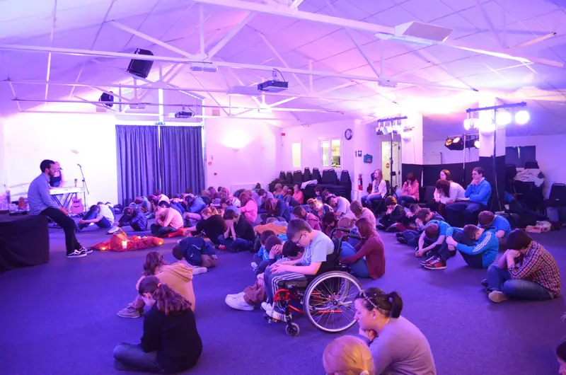
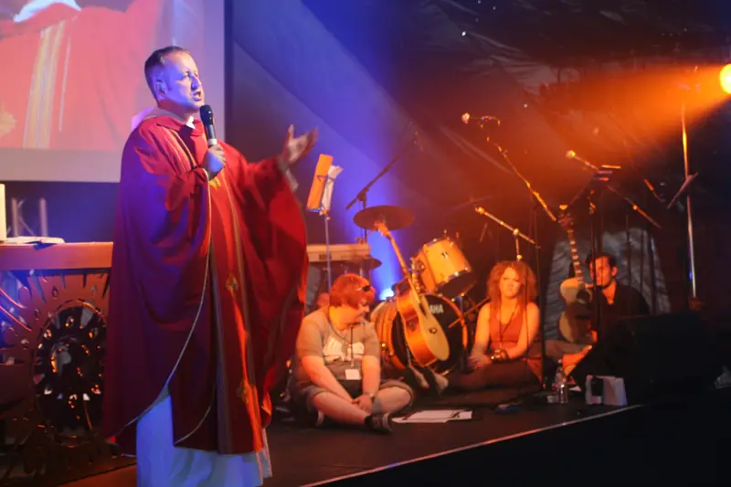
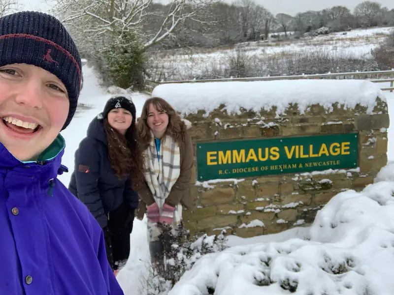
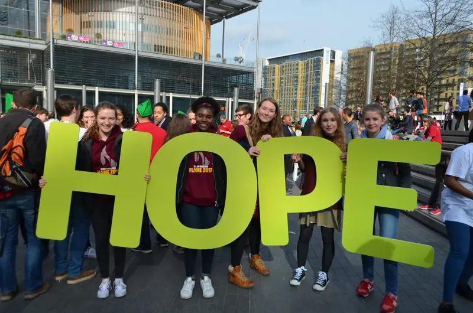

Resources
Short reads on the things we do and why, with links to find out more. Downloads for teachers and leaders are below.

What is Adoration?
What happens in Adoration at The Source, and why Catholics spend time there.

Why do people go to Lourdes?
The story of Bernadette, the Grotto, and what youth helpers do on the diocesan pilgrimage.

What happens on a retreat?
Coming to the Emmaus Village with your class: where you sleep, what you do and what to bring.

What is Flame?
The national gathering for young Catholics at Wembley, and how Hexham and Newcastle goes.
Downloads
Packs, forms and session plans to print and use.